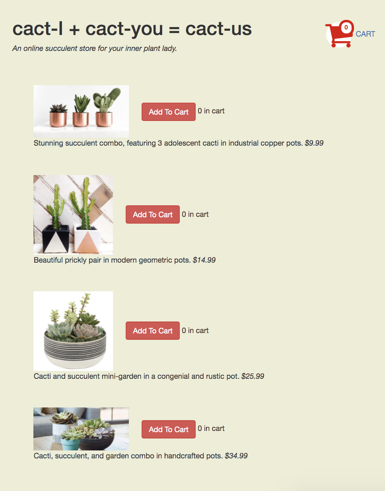
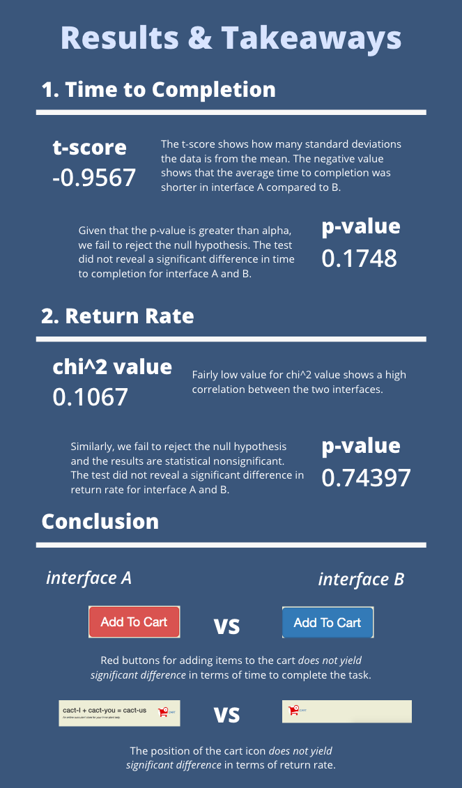

A/B Testing
I'll be exploring the two slightly different versions of an online cactus shop and determine whether it has an
effect on various metrics.
Version A

Version A uses red "Add to Cart" buttons to emphasize the most important button that will lead customers
to add cacti to their shopping carts. The shopping cart is placed on the top right of the screen,
where users are most accostomed to on an average e-commerce website.
Version B

Version B uses blue "Add to Cart" buttons that is relatively neutral in terms of effect. The shopping cart
is placed under the items as the footer of the page.
Check out the website here!
Experiment based on Two Metrics
40 test users will be tasked to add $150 worth of cacti to their shopping carts. Their interactions will be analyzed using 2 metrics:
- Time to Completion: how fast they are able to allocate items to the shopping cart up to $150 or more.
- Return Rate: whether or not they revisited the website after checking the cart.
Hypotheses for Time to Completion
- Null Hypothesis: There is no significant difference between interface A and B in terms of time to completion.
- Alternative Hypothesis: Interface A will take less time to complete over interface B.
Why? My intention behind using red buttons for adding items to the cart is to make the buttons more noticable and
easier access. Thus, I'd predict that users would spend less time completing the task on interface A.
Hypotheses for Return Rate
- Null Hypothesis: There is no significant difference between interface A and B in terms of return rate.
- Alternative Hypothesis: Interface A leads to higher return rate over interface B.
Why? My intention behind putting the cart on the top right hand corner is to replicate the common location of carts on an online shopping platform.
Thus, I'd predict that users would interact with the cart and the online catalog in interface A more so than interface B.
Results
1. Time to Completion (in milliseconds)
| Interface A |
Interface B |
| 26067 |
14565 |
| 13997 |
34155 |
| 28020 |
18525 |
| 10699 |
3421 |
| 5976 |
16898 |
| 10336 |
15242 |
| 5820 |
16615 |
| 19616 |
7086 |
| 12549 |
8466 |
| 10075 |
8292 |
| 7210 |
5826 |
| 9765 |
6853 |
| 4973 |
153473 |
| 8581 |
13809 |
| 10056 |
7165 |
| 10870 |
5209 |
| 8448 |
4680 |
| 3930 |
7353 |
| 5555 |
6770 |
| 6779 |
7399 |
2. Return Rate
| Interface |
Return |
No Return |
| A |
12 |
8 |
| B |
13 |
7 |
Statistical Analysis

Lessons Learned
- I think the biggest limitation was the sample size. Perhaps with more users, we could see significance in the data.
- Another limitation would be that most and all the test users already have the prior experience interacting with the website themselves. This can lead to biased results.
- Perhaps the changes I made for each version was not drastic enough to have an effect on how users navigate and understand the page.
- Regardless of the results to my specific experiment, there still is a correlation between color usage/page structure and user engagement and navigation.